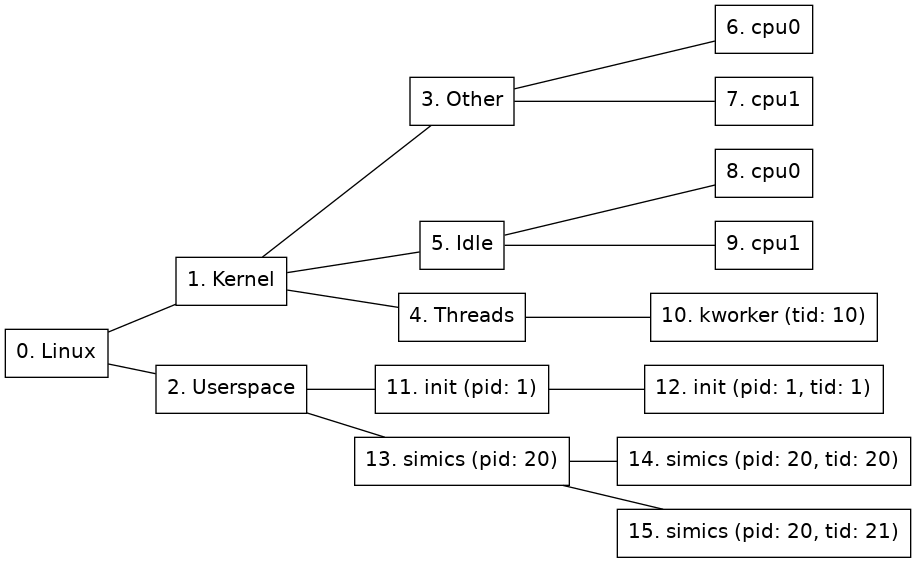

A node in the node tree may be identified with its node ID. This is often not good enough, since it is hard to know the given node ID in advance; this makes scripting hard to accomplish in a satisfying way. Using node path patterns makes it possible to find nodes based on their properties instead of their node ID. A node path pattern is a matching rule that selects nodes based on one or more property values, and optionally the property values of their ancestors.
This section will assume that the node tree looks like the one in figure 1.

The simplest node path pattern is a single integer. This is treated as a node ID. Thus, "2" can be used to find the Userspace node:
simics> board.software.find 2
The name property will be used for matching if the given node specification only contains letters, digits, and underscore, and does not start with a digit. This gives an alternative way of locating the Userspace node in 1:
simics> board.software.find Userspace
However, if the name contain any non-alphanumeric characters, such as space or punctuation, the name needs to be enclosed in single quotes, and the name property needs to be named explicitly:
simics> board.software.find "name='Linux'"
A node path pattern can specify properties other than just the name of a node. For example, this one will find all nodes that belong to the simics process (the process node and all thread nodes) by specifying the matching pid:
simics> board.software.find "pid=20"
If a match is to be made based on multiple properties, they should be comma-separated. Given the node tree in figure 1, the following pattern would match just one node, the thread node with tid=20:
simics> board.software.find "pid=20,tid=20"
A slash (/) is used to separate rules for nodes at adjacent levels in the tree. For example, this pattern matches any node named init that lies directly under a node named Userspace:
simics> board.software.find "Userspace/init"
A slash at the beginning of the pattern anchors it to the root of the tree, so that the part after the first slash must match the root node, the part after the second slash must match any of its children, etc.
Node path patterns can contain three kinds of wildcards:
*) will match any single node. For example, /*/*/simics will match any node named simics that is a grandchild of the root node.**) will match a path of zero or more nodes in the tree. For example, /name=Linux/**/pid=20 matches nodes 13, 14, and 15 in the example tree.*s* will match the ls, sh, and Userspace nodes; and pid=* will match all nodes with a pid property.Quoted wildcards will be treated literally. That means, name="'ho*er'" will only match a node named "ho*er", while name="'ho'*'er'" will match any nodes named "hover", "hoover", "hotter", etc.
This is a short summary of the available operators when creating a node path pattern.
str will be the same as name='str'./): separates rules for nodes at different levels. At the beginning of a pattern, it means that the root has to match the following rule.*): matches exactly one node, ignoring all node properties on that level.**): Matches a path of zero or more nodes in the node tree.=): Specifies the required value of a node property.,): Separator when a rule restricts more than one node property.Node path patterns have some known limitations:
*) is the only wildcard available for property matching. More advanced wildcards, such as name=cat?? or pid=5[0-1], are not supported./**/ or /**.**/; use /**/ instead. (However, note that all patterns that do not already start with a slash are implicitly prefixed with /**/.)** is not a valid pattern. Use * in order to match all nodes.